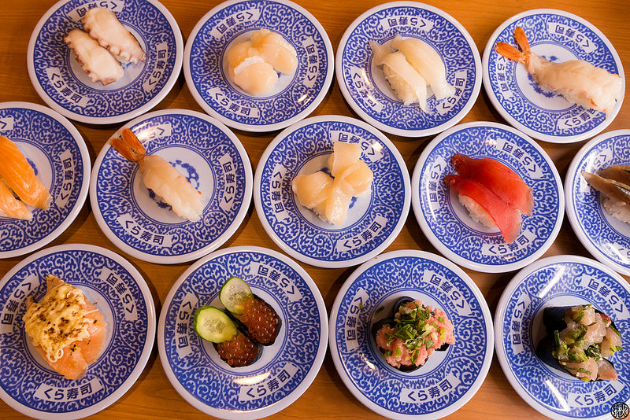

來自日本的「藏壽司」是台灣超受歡迎的迴轉壽司連鎖店，
然2018年6月「SUSHIRO壽司郎」頂著”日本最受喜愛”迴轉壽司店光環進駐台北車站美食商圈後，立刻掀起一場迴轉壽司爭霸戰。
特別整理兩次到「藏壽司」全球旗艦店吃了近40種多樣化握壽司、軍艦壽司等餐點及充滿趣味的用餐過程給大家參考。
「藏壽司」有六十種以上的握壽司、軍艦壽司等餐點，九成以上都是均一價每盤40元、高價商品就是80元(兩盤)，
不分顏色、以盤數計價，看到喜歡就拿，點餐免用腦。
下一頁